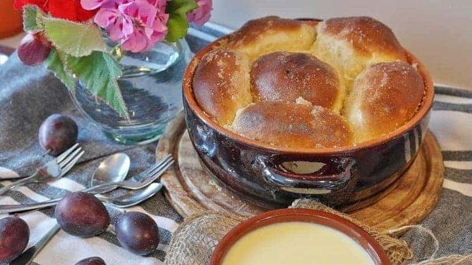

Gastronomia

Tafelspitz
Tafelspitz es una comida típica austríaca que se encuentra como plato principal en muchos restaurantes de todo el país.

Buchteln
La comida austriaca tiene muchas influencias bohemias y el Buchteln es uno de esos platos que se ha convertido en parte de la comida austriaca cotidiana.

Schnitzel
Si hay un plato representativo de Austria es el Schnitzel. Conocido como el Wiener Schnitzel, es uno de los platos nacionales de Austria.